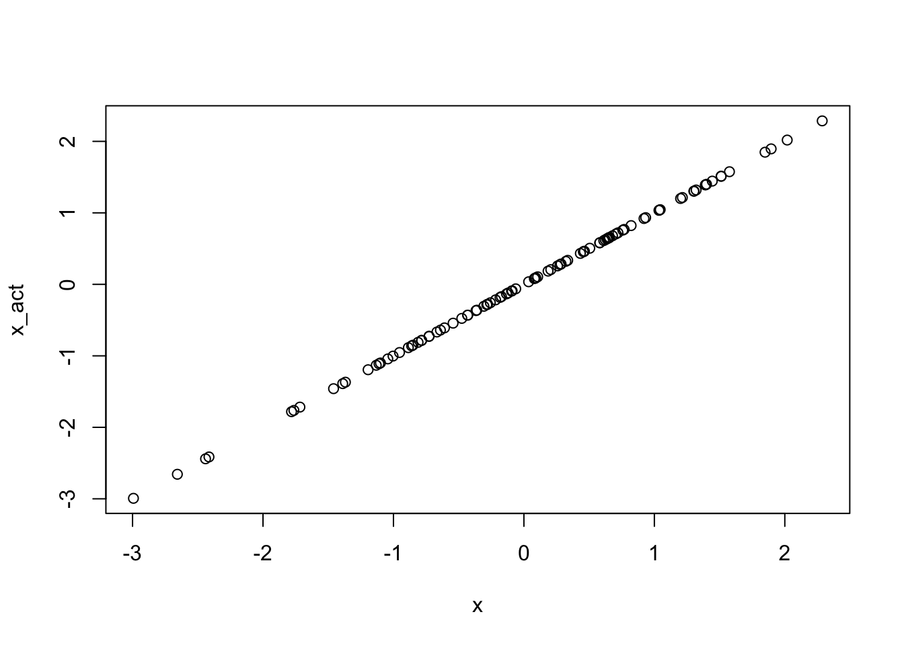
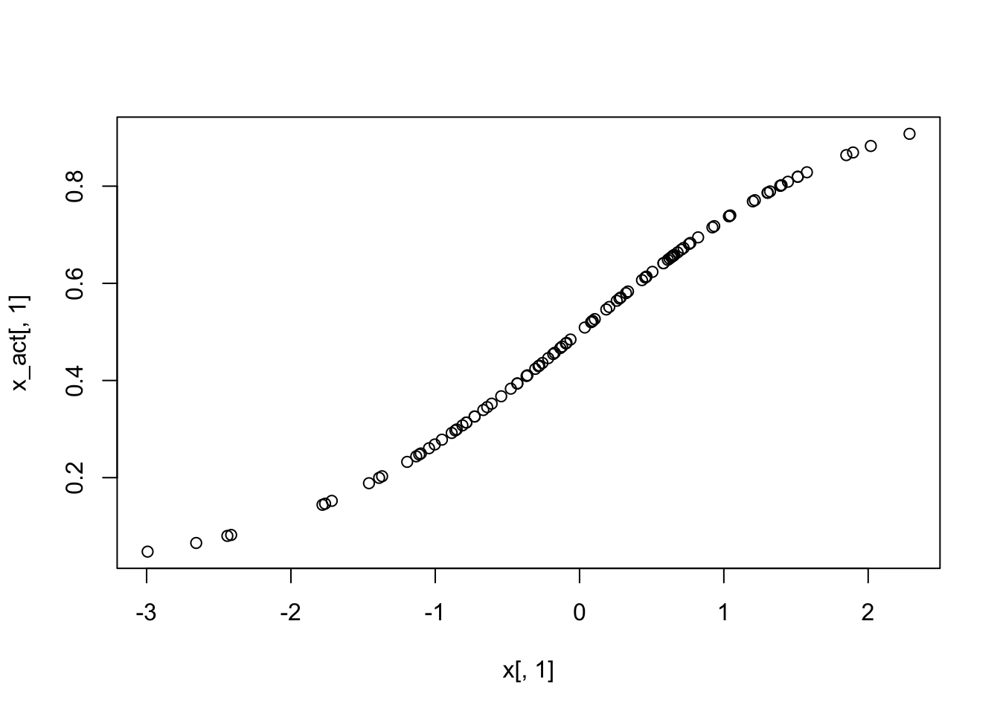
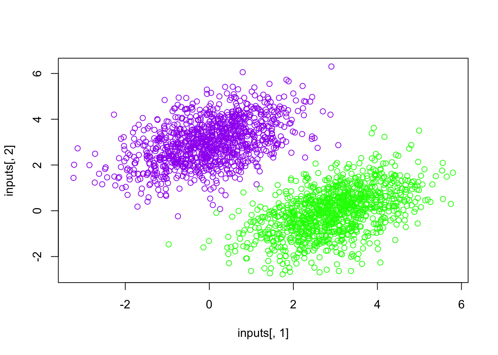
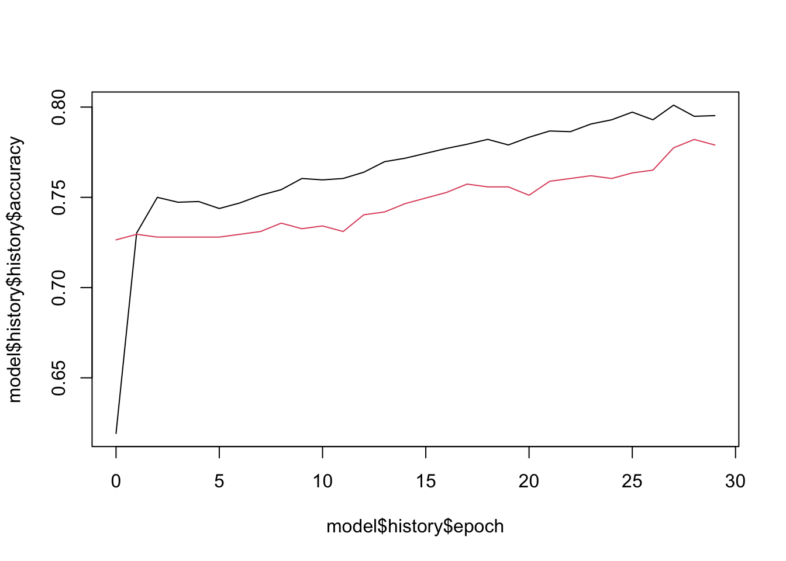

# install.packages("keras3")GEOG 5160 6160 Lab 07
Introduction
For the next few labs, we’ll be looking at deep learning models. As these are computationally costly models, they are generally built using specialized software to make them as efficient as possible. The full software stack is a little complicated, but in short, it consists of:
- The backend deep learning software. This includes tensorflow, torch and jax.
- The keras API. This is written in Python and tries to act as a unified interface to the different types of software
- The R keras3 package. This uses the reticulate package to call keras functions from R
If at this point, this seems excessively complicated, well, it is. But there is a reason for this, which is to allow a great amount of flexibility. If you want to develop very complex models, you can work directly with the deep learning package. If you need only to use standard functions, then you can use keras. And if you want to use R as the front-end to all of this, you can do that too.
We’ll mainly be using a combination of keras3 and tensorflow in this class, so the goals of this lab are to introduce these are get them running with a couple of simple examples. The code shown here borrows heavily from Deep Learning with R (2nd edition) by Chollet et al.
Objectives
- Set up keras3 and tensorflow on your computer
- Understand the basic operations in a neural network
- Build a simple classification model using standard network layers
- Train and evaluate this model
Installation
Installing deep learning software can be quite complicated. The backend software is in continual and rapid development, so that the libraries change often. In addition, these often are set up to use any available GPU power rather than (or in addition to) CPU power, and this requires an extra step of installing drivers for this. Here, we’ll try to use the simplest approach in R, which is to install the keras3 package, and then let it take care of the backend. So start by installing this package:
If everything went ok, then load the library and run the following command to install the backend
# library(keras3)
# install_keras(backend = "tensorflow")This should create a specific virtual environment called r-keras, and install some additional packages (this may take a few minutes). If you get any errors with this, please let me know.
Installing into a virtual environment
You can also change the name of the virtual environment as follows (this allows you to install different backends or versions in different environments). Don’t worry about this step if the first installation went well
# library(reticulate)
# virtualenv_create("r-keras", python=install_python())
# library(keras3)
# install_keras(envname = "r-keras")
# use_virtualenv("r-keras")Tensorflow
Tensors
Let’s start by looking at the building blocks of these networks, tensors. This is the standard data object, and describes an array of numbers with a certain number of dimensions. If that sounds a lot like matrices and arrays, it is because this is just a highly efficient way of storing these. Start by loading the libraries:
library(keras3)
library(tensorflow)
Attaching package: 'tensorflow'The following objects are masked from 'package:keras3':
set_random_seed, shapeNow we can make a simple 2D tensor with 2 rows and 3 columns as follows. This uses R’s array function to create the data, then converts it to a tensor:
r_array <- array(1:6, c(2, 3))
tf_tensor_2D <- as_tensor(r_array)
tf_tensor_2Dtf.Tensor(
[[1 3 5]
[2 4 6]], shape=(2, 3), dtype=int32)And here’s a 1D tensor
r_array <- array(1:4, c(4))
tf_tensor_1D <- as_tensor(r_array)
tf_tensor_1Dtf.Tensor([1 2 3 4], shape=(4), dtype=int32)And a 3D tensor
r_array <- array(1:12, c(2,3,2))
tf_tensor_3D <- as_tensor(r_array)
tf_tensor_3Dtf.Tensor(
[[[ 1 7]
[ 3 9]
[ 5 11]]
[[ 2 8]
[ 4 10]
[ 6 12]]], shape=(2, 3, 2), dtype=int32)You can use a lot of the basic R functions with these. For example, to see the size of the tensor
dim(tf_tensor_2D)[1] 2 3or
tf_tensor_2D$ndim[1] 2You can also add two tensors (as long as they have the same shape)
tf_tensor_2D + tf_tensor_2Dtf.Tensor(
[[ 2 6 10]
[ 4 8 12]], shape=(2, 3), dtype=int32)There are also functions to create tensors with specific values
## Tensor of 1s
tf$ones(shape(1, 3))tf.Tensor([[1. 1. 1.]], shape=(1, 3), dtype=float32)## Tensor of 0s
tf$zeros(shape(1, 3))tf.Tensor([[0. 0. 0.]], shape=(1, 3), dtype=float32)## Tensor of random numbers (normally distributed)
tf$random$normal(shape(1, 3), mean = 0, stddev = 1)tf.Tensor([[-0.5851821 -1.2661259 0.18973166]], shape=(1, 3), dtype=float32)## Tensor of random numbers (uniformly distributed)
tf$random$uniform(shape(1, 3))tf.Tensor([[0.09605968 0.61722696 0.06396496]], shape=(1, 3), dtype=float32)tensorflow also defines a variable data type:
W <- tf$Variable(array(0, dim = c(2,2)))
W<tf.Variable 'Variable:0' shape=(2, 2) dtype=float64, numpy=
array([[0., 0.],
[0., 0.]])>While this will look a lot like a tensor, this is used to store values that change during training including model weights and parameters
Basic operations
tensorflow comes with a lot of basic math functions. Let’s start by creating a 2D random tensor:
tensor_rnd = tf$random$normal(shape(2, 3), mean = 10, stddev = 1)Then we can calculate the square or square root:
tf$square(tensor_rnd)tf.Tensor(
[[ 85.05538 83.13222 108.12112 ]
[ 95.007256 84.48246 127.21462 ]], shape=(2, 3), dtype=float32)tf$sqrt(tensor_rnd)tf.Tensor(
[[3.0368648 3.0195508 3.2246132]
[3.1220453 3.0317378 3.3584142]], shape=(2, 3), dtype=float32)There are also specific functions that are key to train a neural network. You might recall from the lecture that there are three main calculate steps.
- In the forward pass, the output of every neuron in the network is calculated as the weighted sum of the inputs, plus a bias term \(y = W \cdot x + b\). The first part of this equation is the dot product of two matrices, the array of weights (\(W\)) and the input values (\(x\)). In tensorflow, this calculated using the
matmulfunction. For example, here we create tensors of weights and random input values and multiply them together:
W <- tf$Variable(array(runif(4), c(2,2)))
print(W)<tf.Variable 'Variable:0' shape=(2, 2) dtype=float64, numpy=
array([[0.91480604, 0.28613953],
[0.93707541, 0.83044763]])>x <- as_tensor(array(rnorm(4), c(2, 2)))
print(x)tf.Tensor(
[[ 0.36312841 0.40426832]
[ 0.6328626 -0.10612452]], shape=(2, 2), dtype=float64)tf$matmul(x, W)tf.Tensor(
[[0.71102197 0.43962906]
[0.47949986 0.09295616]], shape=(2, 2), dtype=float64)If we also create a bias (a constant additive term), we can create the basic weighted sum of \(W \times x + b\)
b <- tf$Variable(array(1, dim = c(2)))
print(b)<tf.Variable 'Variable:0' shape=(2,) dtype=float64, numpy=array([1., 1.])>tf$matmul(x, W) + btf.Tensor(
[[1.71102197 1.43962906]
[1.47949986 1.09295616]], shape=(2, 2), dtype=float64)- Activation function
The next step in the forward pass is to send the output of node (above) through an activation function. There are several of these, and the code below simply illustrates how they convert a vector of randomly generated values (x)
- Linear activation
x <- as_tensor(seq(-3, 3, length.out = 100))
x_act <- activation_linear(x)
plot(x, x_act)
- Sigmoid activation. Note that this requires a second column of zeros added to it
xs <- layer_concatenate(list(x,
as_tensor(rep(0, length(x)))))
x_act <- activation_sigmoid(xs)
plot(x, x_act[1:length(x)], type = 'l')
- ReLu activation. This is a widely used activation function in deep learning, which sets all output below zero to zero, and uses a linear transform for the values above 0
# x_act <- activation_relu(x)
# plot(x, x_act, type = 'l')- Backpropagation
Following the forward pass, neural networks are trained using backpropagation. In this step, a gradient is calculated for each weight relatively to the loss or error. This gradient tells the network how much to update each weight (steep gradients mean that the error is large and a larger update is needed), as well as the direction of change (positive or negative). This becomes very complicated in larger networks, where this has to be (back)propagated through multiple layers and across mulitple nodes. Tensorflow uses the concept of a gradient tape to help in this. This records all the necessary steps to estimate these gradients by tracking all the connections in the network. Once set up, it can then estimate the gradient of any output in the network relative to any variable or set of variables.
To illustrate this, the following code uses a simple model of \(y = 2 \times x + 3\). This is used to create a GradientTape object, and then we can estimate the gradient for y with respect to x. As this is just a simple linear model, the gradient is, of course, the slope of 2:
x <- tf$Variable(0)
with(tf$GradientTape() %as% tape, {
y <- 2 * x + 3
})
grad_of_y_wrt_x <- tape$gradient(y, x)
grad_of_y_wrt_xtf.Tensor(2.0, shape=(), dtype=float32)Putting it together: a linear classifier
We’ll now illustrate how all of this comes together with a really simple example. This is a dataset with two features (x1 and x2) and a binary target (class):
df = read.csv("./datafiles/slc.csv")
head(df) x1 x2 class
1 0.76600976 1.984742 neg
2 -0.14333258 2.976064 neg
3 0.86628515 2.447990 neg
4 1.34465664 4.420691 neg
5 -0.06044813 2.278719 neg
6 -0.63563344 2.258861 negAs tensorflow really wants values as an array, we’ll create two of these, one for the features (inputs) and one for the targets:
inputs <- cbind(df$x1, df$x2)
targets <- array(ifelse(df$class == "neg", 0, 1), dim = c(nrow(df),1))Let’s plot these out to see the distribution:
plot(x = inputs[, 1], y = inputs[, 2],
col = ifelse(targets[, 1] == 0, "purple", "green"))
From the plot, you should be able to already visualize where you would place a line to separate the two groups. We’ll now create a linear classifier that can find this line as the following equation (if you look closely, you’ll see that this is just a linear model with slopes (W) and intercept (b)).
\[ \mbox{prediction} = W \times input + b \]
This is trained to minimize the square of the difference between predictions and the targets. As you’ll see, it’s actually a much simpler example than the end-to-end example of a toy two-layer neural network you saw at the end of chapter 2. However, this time you should be able to understand everything about the code, line by line.
Next, we’ll initialize values for W and b, using random values and with zeros, respectively.
input_dim <- 2
output_dim <- 1
W <- tf$Variable(initial_value =
tf$random$uniform(shape(input_dim, output_dim)))
print(W)<tf.Variable 'Variable:0' shape=(2, 1) dtype=float32, numpy=
array([[0.36683595],
[0.08782947]], dtype=float32)>b <- tf$Variable(initial_value = tf$zeros(shape(output_dim)))
print(b)<tf.Variable 'Variable:0' shape=(1,) dtype=float32, numpy=array([0.], dtype=float32)>As we have two inputs, W is just two scalar coefficients, w1 and w2. b is a single scalar coefficient representing the intercept. So the full, expanded model is:
\[ \mbox{prediction} = [w_1,w_2] \times [x_1, x_2] + b = w_1 \times x_1 + w_2 \times x_2 + b \]
Let’s create a function that performs a forward pass by calculating the above equation (note this uses the matmul function to get the weighted output). Normally, this would use a sigmoid activation function as the outcome is binary, but to keep things simple, we won’t transform the output. Note that we use a function to calculate this so that we can reuse this easily in the training loop below
model <- function(inputs)
tf$matmul(inputs, W) + bTo illustrate what this does, let’s just run this with the first row of inputs:
input1 = as_tensor(array(inputs[1, ], c(1,2)), dtype = 'float32')
model(input1)tf.Tensor([[0.4553188]], shape=(1, 1), dtype=float32)Giving the predicted value for the first observation (which is a 0). This is obviously with random weights, so there’s really no expectation that it will be close to the actual value. Next, we need to calculate how close it is through a loss function. For this example, we’ll use a simple mean squared error, and we’ll create a function to calculate that:
square_loss <- function(targets, predictions) {
per_sample_losses <- tf$square(tf$subtract(targets, predictions))
tf$reduce_mean(per_sample_losses)
}Now let’s put these together with the gradient tape function to calculate the update to the weights through backpropagation. In this function, it uses the GradientTape to store the results of the forward pass and loss calculation. Then the tape is used to get the gradients or derivatives of the weights relative to the loss. Finally, the update is calculated by multiplying the gradient by a learning rate. This is a value less than one, which limits the update at each step.
learning_rate <- 0.1
training_step <- function(inputs, targets) {
with(tf$GradientTape() %as% tape, {
predictions <- model(inputs)
loss <- square_loss(predictions, targets)
})
grad_loss_wrt <- tape$gradient(loss, list(W = W, b = b))
W$assign_sub(grad_loss_wrt$W * learning_rate)
b$assign_sub(grad_loss_wrt$b * learning_rate)
loss
}After all that preparation, we’re ready to train the model. We convert the inputs to a tensor, then run a loop 40 times, each time calling the training_step function to update the weights
inputs <- as_tensor(inputs, dtype = "float32")
for (step in seq(40)) {
loss <- training_step(inputs, targets)
cat(sprintf("Loss at step %s: %.4f\n", step, loss))
}Loss at step 1: 0.2103
Loss at step 2: 0.1064
Loss at step 3: 0.0901
Loss at step 4: 0.0835
Loss at step 5: 0.0783
Loss at step 6: 0.0737
Loss at step 7: 0.0696
Loss at step 8: 0.0657
Loss at step 9: 0.0623
Loss at step 10: 0.0591
Loss at step 11: 0.0562
Loss at step 12: 0.0535
Loss at step 13: 0.0511
Loss at step 14: 0.0489
Loss at step 15: 0.0469
Loss at step 16: 0.0451
Loss at step 17: 0.0434
Loss at step 18: 0.0419
Loss at step 19: 0.0405
Loss at step 20: 0.0392
Loss at step 21: 0.0380
Loss at step 22: 0.0370
Loss at step 23: 0.0360
Loss at step 24: 0.0351
Loss at step 25: 0.0343
Loss at step 26: 0.0336
Loss at step 27: 0.0329
Loss at step 28: 0.0323
Loss at step 29: 0.0318
Loss at step 30: 0.0313
Loss at step 31: 0.0308
Loss at step 32: 0.0304
Loss at step 33: 0.0300
Loss at step 34: 0.0296
Loss at step 35: 0.0293
Loss at step 36: 0.0290
Loss at step 37: 0.0288
Loss at step 38: 0.0285
Loss at step 39: 0.0283
Loss at step 40: 0.0281Once trained, we can predict for each of the original observations and plot the predicted values.
model(inputs)tf.Tensor(
[[0.293854 ]
[0.01089287]
[0.25242448]
...
[0.98742694]
[1.190746 ]
[0.9176459 ]], shape=(2000, 1), dtype=float32)As we didn’t transform the output using a sigmoid activation function, the values are continuous and range between roughly 0 and 1. To get a binary prediction, we’ll use a simple threshold of 0.5 (i.e. predictions above 0.5 are classed as 1, below 0 as 0).
predictions <- model(inputs)
inputs <- as.array(inputs)
predictions <- as.array(predictions)
plot(x = inputs[, 1], y = inputs[, 2],
col = ifelse(predictions[, 1] <= 0.5, "purple", "green"))
slope <- -W[1, ] / W[2, ]
intercept <- (0.5 - b) / W[2, ]
abline(as.array(intercept), as.array(slope), col = "red")
The keras API
The examples above show how to work with the low-level tensorflow interface. In practice, you can skip a lot of the detail by using the keras API. In the code below, we’ll build a multi-layer neural network to perform a classification exercise.
Keras workflow
Building a deep learning model through Keras requires a series of steps:
- Create training data as tensors. This should include the input features and the target as separate tensors. For the simple models we are looking at in this lab, this is fairly straightforward, but for the more complex models, careful attention is required to the size and shape of these tensors.
- Create the network architecture. This consists of the set of layers that link the inputs to the target(s)
- Define the loss function, the optimizer and the performance metrics to be used to test the progress of the training
- Train the model using the training data, with part of the training data left out as validation data
Dataset
The data are from the file credit_data.csv, and represent a number of bank clients who have been tagged as having good or bad credit. The goal is to use the other variables in the file to predict this. Let’s start by reading in the data.
library(tidyverse)── Attaching core tidyverse packages ──────────────────────── tidyverse 2.0.0 ──
✔ dplyr 1.1.4 ✔ readr 2.1.5
✔ forcats 1.0.1 ✔ stringr 1.5.2
✔ ggplot2 4.0.0 ✔ tibble 3.3.0
✔ lubridate 1.9.4 ✔ tidyr 1.3.1
✔ purrr 1.1.0
── Conflicts ────────────────────────────────────────── tidyverse_conflicts() ──
✖ dplyr::filter() masks stats::filter()
✖ dplyr::lag() masks stats::lag()
ℹ Use the conflicted package (<http://conflicted.r-lib.org/>) to force all conflicts to become errorsdf = read.csv("./datafiles/credit_data.csv")
head(df) Status Seniority Home Time Age Marital Records Job Expenses Income
1 good 9 rent 60 30 married no freelance 73 129
2 good 17 rent 60 58 widow no fixed 48 131
3 bad 10 owner 36 46 married yes freelance 90 200
4 good 0 rent 60 24 single no fixed 63 182
5 good 0 rent 36 26 single no fixed 46 107
6 good 1 owner 60 36 married no fixed 75 214
Assets Debt Amount Price
1 0 0 800 846
2 0 0 1000 1658
3 3000 0 2000 2985
4 2500 0 900 1325
5 0 0 310 910
6 3500 0 650 1645library(skimr)
skim(df)| Name | df |
| Number of rows | 4454 |
| Number of columns | 14 |
| _______________________ | |
| Column type frequency: | |
| character | 5 |
| numeric | 9 |
| ________________________ | |
| Group variables | None |
Variable type: character
| skim_variable | n_missing | complete_rate | min | max | empty | n_unique | whitespace |
|---|---|---|---|---|---|---|---|
| Status | 0 | 1 | 3 | 4 | 0 | 2 | 0 |
| Home | 6 | 1 | 4 | 7 | 0 | 6 | 0 |
| Marital | 1 | 1 | 5 | 9 | 0 | 5 | 0 |
| Records | 0 | 1 | 2 | 3 | 0 | 2 | 0 |
| Job | 2 | 1 | 5 | 9 | 0 | 4 | 0 |
Variable type: numeric
| skim_variable | n_missing | complete_rate | mean | sd | p0 | p25 | p50 | p75 | p100 | hist |
|---|---|---|---|---|---|---|---|---|---|---|
| Seniority | 0 | 1.00 | 7.99 | 8.17 | 0 | 2.00 | 5 | 12.0 | 48 | ▇▃▁▁▁ |
| Time | 0 | 1.00 | 46.44 | 14.66 | 6 | 36.00 | 48 | 60.0 | 72 | ▁▂▅▃▇ |
| Age | 0 | 1.00 | 37.08 | 10.98 | 18 | 28.00 | 36 | 45.0 | 68 | ▆▇▆▃▁ |
| Expenses | 0 | 1.00 | 55.57 | 19.52 | 35 | 35.00 | 51 | 72.0 | 180 | ▇▃▁▁▁ |
| Income | 381 | 0.91 | 141.69 | 80.75 | 6 | 90.00 | 125 | 170.0 | 959 | ▇▂▁▁▁ |
| Assets | 47 | 0.99 | 5403.98 | 11574.42 | 0 | 0.00 | 3000 | 6000.0 | 300000 | ▇▁▁▁▁ |
| Debt | 18 | 1.00 | 343.03 | 1245.99 | 0 | 0.00 | 0 | 0.0 | 30000 | ▇▁▁▁▁ |
| Amount | 0 | 1.00 | 1038.92 | 474.55 | 100 | 700.00 | 1000 | 1300.0 | 5000 | ▇▆▁▁▁ |
| Price | 0 | 1.00 | 1462.78 | 628.13 | 105 | 1117.25 | 1400 | 1691.5 | 11140 | ▇▁▁▁▁ |
There are about 4400 observations in the set, and a number of these have missing values. We’ll use the tidyverse drop_na function to remove all rows with missing values, and also convert the Status column to a binary variable. This is an important step - deep learning models need all features and targets to be numerical.
df = df |>
# mutate(Status = as.factor(Status)) |>
mutate(Status = ifelse(Status == 'bad', 1, 0)) |>
drop_na()Next, we’ll split the data into the usual set of training and testing.
library(tidymodels)── Attaching packages ────────────────────────────────────── tidymodels 1.4.1 ──✔ broom 1.0.10 ✔ rsample 1.3.1
✔ dials 1.4.2 ✔ tailor 0.1.0
✔ infer 1.0.9 ✔ tune 2.0.1
✔ modeldata 1.5.1 ✔ workflows 1.3.0
✔ parsnip 1.3.3 ✔ workflowsets 1.1.1
✔ recipes 1.3.1 ✔ yardstick 1.3.2 ── Conflicts ───────────────────────────────────────── tidymodels_conflicts() ──
✖ scales::discard() masks purrr::discard()
✖ dplyr::filter() masks stats::filter()
✖ recipes::fixed() masks stringr::fixed()
✖ yardstick::get_weights() masks keras3::get_weights()
✖ dplyr::lag() masks stats::lag()
✖ yardstick::spec() masks readr::spec()
✖ .GlobalEnv::step() masks recipes::step(), stats::step()df_split = initial_split(df, prop = 0.8)
df_train = training(df_split)
df_test = testing(df_split)table(df_train$Status)
0 1
2410 821 table(df_test$Status)
0 1
603 205 Now, we’ll set up a recipe to transform the data. As noted above, all the inputs need to be numeric, so we’ll need to one hot encode or dummy transform all the categorical variables with step_dummy. We’ll also normalize all variables to the same range (this subtracts the mean and divides by the standard deviation). Neural networks are very sensitive to the range of values, so it is standard practice to transform data to \(z\)-scores (as here) or to a 0-1 range.
rec = recipe(Status ~ ., df_train) |>
step_normalize(all_numeric_predictors()) |>
step_dummy(all_nominal_predictors())
df_train = rec |>
prep() |>
bake(df_train)
df_test = rec |>
prep() |>
bake(df_test)Next, we’ll split the training data into training and validation. Validation datasets are important in deep learning as the complex networks can quickly and easily overfit to the training data. Validation data are used during the training process. Following each adjustment of the weights, the network predicts the labels for the validation set, and a validation error is calculated. A decreasing validation error suggests that the model is training well to the data, but when it starts to increase, this indicates overfitting: prediction for new data becomes worse. Here, we’ll remove a random sample of 20% of the original training data for validation, and use the other 80% for training.
ntrain = nrow(df_train)
train_id = sample(ntrain, ntrain*0.8)
df_valid = df_train[-train_id, ]
df_train = df_train[train_id, ]As a final processing step, we’ll convert all the datasets to R’s matrix (or array) format. keras assumes that all data are in this format, which cuts down on internal processing when the model trains:
We’ll get a list of all the transformed features for later selection:
feature_names = colnames(df_train) |>
setdiff("Status")
feature_names [1] "Seniority" "Time" "Age"
[4] "Expenses" "Income" "Assets"
[7] "Debt" "Amount" "Price"
[10] "Home_other" "Home_owner" "Home_parents"
[13] "Home_priv" "Home_rent" "Marital_married"
[16] "Marital_separated" "Marital_single" "Marital_widow"
[19] "Records_yes" "Job_freelance" "Job_others"
[22] "Job_partime" train_features = as.matrix(df_train[,feature_names])
train_targets <- as.matrix(df_train$Status)
valid_features = as.matrix(df_valid[,feature_names])
valid_targets <- as.matrix(df_valid$Status)
test_features = as.matrix(df_test[,feature_names])
test_targets <- as.matrix(df_test$Status)Model architecture
Defining the network architecture
Now we’ll turn to designing the model. The first step is to create the architecture. keras has two methods to create the network. The simplest is to use the keras_model_sequential() function. This takes as input the definition of the hidden layers, as well as any parameters that are used to modify these during training.
For example, to create a simple, two layer model with a single output, one hidden layer with 10 nodes, you would run the following command. Note that the first function takes the argument input_shape which describes the expected shape of the tensor holding the features (here 20 input features), and that we specify a ReLU activation function for the output.
model <- keras_model_sequential(input_shape = c(20)) |>
layer_dense(units = 10, activation = "relu") |>
layer_dense(units = 1, activation = "relu")The basic layer used here is a dense layer. This is one where every node connects to each incoming input and to each output. In this case, each of the twenty input features would connect to the 10 nodes in the hidden layer, and each of those will connect to the single output node. Each of these connections will have a weight to it, as well as a bias added to each node. Overall this gives us \(20 \times 10 + 10 = 210\) from the input to the hidden layer, and \(10 \times 1 + 1 = 11\), giving 221 parameters overall. To check this we can use the summary function with the model object, which gives an overview of the model architecture. You’ll see that it has automatically named each layer (e.g. dense_1) as well as the overall model (you can add names if useful).
summary(model)Model: "sequential"
┏━━━━━━━━━━━━━━━━━━━━━━━━━━━━━━━━━━━┳━━━━━━━━━━━━━━━━━━━━━━━━━━┳━━━━━━━━━━━━━━━┓
┃ Layer (type) ┃ Output Shape ┃ Param # ┃
┡━━━━━━━━━━━━━━━━━━━━━━━━━━━━━━━━━━━╇━━━━━━━━━━━━━━━━━━━━━━━━━━╇━━━━━━━━━━━━━━━┩
│ dense (Dense) │ (None, 10) │ 210 │
├───────────────────────────────────┼──────────────────────────┼───────────────┤
│ dense_1 (Dense) │ (None, 1) │ 11 │
└───────────────────────────────────┴──────────────────────────┴───────────────┘
Total params: 221 (884.00 B)
Trainable params: 221 (884.00 B)
Non-trainable params: 0 (0.00 B)The other method to define the architecture uses the Keras API. This is a much more flexible approach based on graph theory and can be used to create networks that are much more complex.
For our model, we’ll create something a little more complex. This will have two hidden layers, each with 256 nodes. The final layer will give the prediction. As we only need to predict one thing (the credit risk), we only need one node. We’ll use ReLu activation functions throughout, except for the final layer where we use a sigmoid activation function to constrain the output to the range [0-1].
We’ll add a couple of dropout layers as well. These are layers where a proportion of the weights are set to zero, effectively removing them from any prediction. This has the effect of penalizing the model, making it slower to train, but reducing the risk of overfitting.
model <-
keras_model_sequential(input_shape = ncol(train_features)) |>
layer_dense(256, activation = "relu") |>
layer_dropout(0.3) |>
layer_dense(256, activation = "relu") |>
layer_dropout(0.3) |>
layer_dense(1, activation = "sigmoid")
summary(model)Model: "sequential_1"
┏━━━━━━━━━━━━━━━━━━━━━━━━━━━━━━━━━━━┳━━━━━━━━━━━━━━━━━━━━━━━━━━┳━━━━━━━━━━━━━━━┓
┃ Layer (type) ┃ Output Shape ┃ Param # ┃
┡━━━━━━━━━━━━━━━━━━━━━━━━━━━━━━━━━━━╇━━━━━━━━━━━━━━━━━━━━━━━━━━╇━━━━━━━━━━━━━━━┩
│ dense_2 (Dense) │ (None, 256) │ 5,888 │
├───────────────────────────────────┼──────────────────────────┼───────────────┤
│ dropout (Dropout) │ (None, 256) │ 0 │
├───────────────────────────────────┼──────────────────────────┼───────────────┤
│ dense_3 (Dense) │ (None, 256) │ 65,792 │
├───────────────────────────────────┼──────────────────────────┼───────────────┤
│ dropout_1 (Dropout) │ (None, 256) │ 0 │
├───────────────────────────────────┼──────────────────────────┼───────────────┤
│ dense_4 (Dense) │ (None, 1) │ 257 │
└───────────────────────────────────┴──────────────────────────┴───────────────┘
Total params: 71,937 (281.00 KB)
Trainable params: 71,937 (281.00 KB)
Non-trainable params: 0 (0.00 B)Note that the increase in the number of layers and nodes has had a large effect in the total number of parameters to be estimated, now at around 71,000 parameters.
Next, we’ll define the list of metrics to be calculated during training. We’ll just record the accuracy, but you can add further metrics here (see the help documentation for a full list).
metrics <- list(
metric_binary_accuracy(name = "accuracy")
)Next, we need to compile the model. This links the model to a specific optimizer, the loss function and any error metrics we want to calculate.
- Optimizer: We’ll use the standard backpropagation algorithm here (
rmsprop), with a learning rate of 1e-4. This is controls the amount of update for each weight at each iteration. Other optimizers includesgdfor stochastic gradient descent andadamfor the Adam algorithm, both of which are useful for much larger, complex data - Loss function. Here, we’ll use binary cross entropy. This is the standard loss function for binary outcomes (cross entropy is a measure of how different two distributions are, and this is well suited to a binary classification exercise, where we want to discriminate between 0’s and 1’s)
- Metrics: we simply include the list we made earlier
model |> compile(
optimizer = optimizer_rmsprop(1e-4),
loss = "binary_crossentropy",
metrics = metrics
)Now we have everything in place, we can train the model. Here we specify:
- the set of features for training (
train_features) - the set of labels for training (
train_targets) - the number of iterations to train the model for (
epochs) - the
batch_size. - the validation features and labels
The batch size is quite an useful parameter to make your network more efficient. This is the number of samples to pass through the network before updating weights. This allows you to trade off the speed of the calculation against the convergence. Using smaller batches uses less memory but may take longer to converge, as the weights are being updated using only a fraction of the data. Larger batches will converge quickly, by may cause memory issues, and may more easily result in overfitting.
model |> fit(
train_features, train_targets,
validation_data = list(valid_features, valid_targets),
batch_size = 256,
epochs = 30,
# callbacks = callbacks,
verbose = 2
)Epoch 1/30
11/11 - 0s - 32ms/step - accuracy: 0.7098 - loss: 0.6203 - val_accuracy: 0.7342 - val_loss: 0.5972
Epoch 2/30
11/11 - 0s - 3ms/step - accuracy: 0.7492 - loss: 0.5816 - val_accuracy: 0.7342 - val_loss: 0.5791
Epoch 3/30
11/11 - 0s - 3ms/step - accuracy: 0.7488 - loss: 0.5654 - val_accuracy: 0.7342 - val_loss: 0.5677
Epoch 4/30
11/11 - 0s - 3ms/step - accuracy: 0.7485 - loss: 0.5519 - val_accuracy: 0.7342 - val_loss: 0.5590
Epoch 5/30
11/11 - 0s - 3ms/step - accuracy: 0.7504 - loss: 0.5421 - val_accuracy: 0.7342 - val_loss: 0.5512
Epoch 6/30
11/11 - 0s - 3ms/step - accuracy: 0.7512 - loss: 0.5340 - val_accuracy: 0.7342 - val_loss: 0.5435
Epoch 7/30
11/11 - 0s - 3ms/step - accuracy: 0.7508 - loss: 0.5299 - val_accuracy: 0.7342 - val_loss: 0.5373
Epoch 8/30
11/11 - 0s - 3ms/step - accuracy: 0.7504 - loss: 0.5225 - val_accuracy: 0.7357 - val_loss: 0.5308
Epoch 9/30
11/11 - 0s - 3ms/step - accuracy: 0.7508 - loss: 0.5121 - val_accuracy: 0.7372 - val_loss: 0.5240
Epoch 10/30
11/11 - 0s - 4ms/step - accuracy: 0.7523 - loss: 0.5099 - val_accuracy: 0.7388 - val_loss: 0.5190
Epoch 11/30
11/11 - 0s - 4ms/step - accuracy: 0.7601 - loss: 0.5051 - val_accuracy: 0.7419 - val_loss: 0.5141
Epoch 12/30
11/11 - 0s - 3ms/step - accuracy: 0.7632 - loss: 0.4981 - val_accuracy: 0.7527 - val_loss: 0.5080
Epoch 13/30
11/11 - 0s - 3ms/step - accuracy: 0.7647 - loss: 0.4900 - val_accuracy: 0.7573 - val_loss: 0.5034
Epoch 14/30
11/11 - 0s - 3ms/step - accuracy: 0.7697 - loss: 0.4897 - val_accuracy: 0.7543 - val_loss: 0.5008
Epoch 15/30
11/11 - 0s - 3ms/step - accuracy: 0.7643 - loss: 0.4890 - val_accuracy: 0.7620 - val_loss: 0.4962
Epoch 16/30
11/11 - 0s - 3ms/step - accuracy: 0.7732 - loss: 0.4836 - val_accuracy: 0.7620 - val_loss: 0.4910
Epoch 17/30
11/11 - 0s - 3ms/step - accuracy: 0.7713 - loss: 0.4807 - val_accuracy: 0.7651 - val_loss: 0.4900
Epoch 18/30
11/11 - 0s - 3ms/step - accuracy: 0.7744 - loss: 0.4780 - val_accuracy: 0.7682 - val_loss: 0.4865
Epoch 19/30
11/11 - 0s - 3ms/step - accuracy: 0.7763 - loss: 0.4731 - val_accuracy: 0.7682 - val_loss: 0.4835
Epoch 20/30
11/11 - 0s - 3ms/step - accuracy: 0.7794 - loss: 0.4686 - val_accuracy: 0.7728 - val_loss: 0.4795
Epoch 21/30
11/11 - 0s - 3ms/step - accuracy: 0.7794 - loss: 0.4690 - val_accuracy: 0.7728 - val_loss: 0.4770
Epoch 22/30
11/11 - 0s - 3ms/step - accuracy: 0.7806 - loss: 0.4662 - val_accuracy: 0.7759 - val_loss: 0.4728
Epoch 23/30
11/11 - 0s - 3ms/step - accuracy: 0.7887 - loss: 0.4574 - val_accuracy: 0.7836 - val_loss: 0.4686
Epoch 24/30
11/11 - 0s - 3ms/step - accuracy: 0.7922 - loss: 0.4557 - val_accuracy: 0.7821 - val_loss: 0.4658
Epoch 25/30
11/11 - 0s - 3ms/step - accuracy: 0.7899 - loss: 0.4551 - val_accuracy: 0.7836 - val_loss: 0.4630
Epoch 26/30
11/11 - 0s - 3ms/step - accuracy: 0.7937 - loss: 0.4506 - val_accuracy: 0.7867 - val_loss: 0.4602
Epoch 27/30
11/11 - 0s - 3ms/step - accuracy: 0.7995 - loss: 0.4510 - val_accuracy: 0.7836 - val_loss: 0.4589
Epoch 28/30
11/11 - 0s - 3ms/step - accuracy: 0.7991 - loss: 0.4451 - val_accuracy: 0.7883 - val_loss: 0.4568
Epoch 29/30
11/11 - 0s - 3ms/step - accuracy: 0.7937 - loss: 0.4435 - val_accuracy: 0.7867 - val_loss: 0.4559
Epoch 30/30
11/11 - 0s - 3ms/step - accuracy: 0.7957 - loss: 0.4435 - val_accuracy: 0.7975 - val_loss: 0.4528As the model runs, you’ll see some output, and if you are running this in RStudio, Keras will plot the evolution of the loss function and the accuracy during the training. Pay attention to changes in the loss (which should decrease) and the accuracy (which should increase). Note that there are values for the training and for the validation set.
These results are also stored in model$history, which we can then plot:
plot(model$history$epoch, model$history$history$loss, type = 'l')
lines(model$history$epoch, model$history$history$val_loss, col = 2)
plot(model$history$epoch, model$history$history$accuracy, type = 'l')
lines(model$history$epoch, model$history$history$val_accuracy, col = 2)
These show an expected decrease in loss, and corresponding increase in accuracy for both the training and validation sets. Note that the validation loss continues to decline, which may suggest that further training would be useful.
We can test the model by using the predict function and the test (not validation!) dataset.
y_pred_test <- model |>
predict(test_features)26/26 - 0s - 2ms/stepAs the predictions are probabilities [0-1], we’ll now convert these to binary [0,1] and calculate the accuracy:
y_pred_test <- ifelse(y_pred_test > 0.5, 1, 0)
pred_correct <- df_test$Status == y_pred_test
cat(sprintf("Validation accuracy: %.2f", mean(pred_correct)))Validation accuracy: 0.80We get an accuracy of about 0.8, which is not bad for a first attempt. The next steps would be to modify the network architecture to see if this could be improved on, e.g. by adding more layers or more nodes in the layers.
Exercise
For the exercise, you just need to make a new model for the credit score data. There are several things that you can try, including:
- Adding more layers
- Adding more nodes
- Changing the learning rate, batch size or number of training epochs
Use a Quarto document to record the code describing the changes in your model setup. You should also re-train the model and make a new set of predictions for the test set, and report the accuracy. Assignments, to include both the Quarto document and (ideally) the compiled HTML file, should be submitted to Canvas by March 31st. Please use the following naming convention: Lab07_lastname.
Please use the following naming convention: Lab07_lastname.ipynb.
Appendix
Credit risk data set
credit_data.csv
| Column header | Variable |
|---|---|
Status |
whether the customer managed to pay back the loan (0) or not (1) |
Seniority |
job experience in years |
Home |
type of homeownership: renting (1), a homeowner (2), and others |
Time |
period planned for the loan (in months) |
Age |
age of the client |
Marital |
marital [status]: single (1), married (2), and others |
Records |
whether the client has any previous records: no (1), yes (2) |
Job |
type of job: full-time (1), part-time (2), and others |
Expenses |
how much the client spends per month |
Income |
how much the client earns per month |
Assets |
total worth of all the assets of the client |
Debt |
amount of credit debt |
Amount |
requested amount of the loan |
Price |
price of an item the client wants to buy |